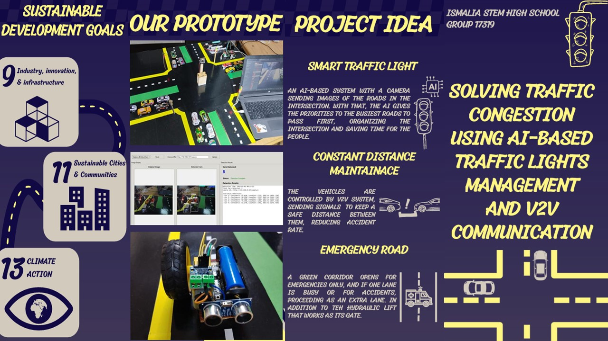

Among all the challenges that face Egypt, urban congestion, pollution, public health issues, and population growth are being focused on this semester. These problems are connected, as each challenge enhances the other. These are the reasons for the main problem, which is Traffic congestion and its consequences in highly concentrated squares in Egypt. This problem led to an increase in the accident rates and a rise in pollution.
Searching for previous solutions for inspiration, LOS ANGELES -ATSAC (automated traffic surveillance and control) and Global Position System (GPS) have worked on solving this problem. While considering their positives and negatives as projects. These are the reasons for constructing the innovative solution to organize the intersections for less wasted time for people time.
The solution is a smart traffic system that utilizes V2V communication to achieve a lower response time, thereby helping to reduce traffic flow waves. The system provides a smart traffic light in the intersection modified with a camera connected to an AI model that decides which lane to go first in a specific time, which is better than the normal system that takes the same time for all the lanes empty or full.
In addition, the green corridor that opens with a fence by a hydraulic lift enhances the safety procedures and provides emergency services. The green corridor works for the ambulance and emergencies only, and it works as an extra lane during traffic hours.
By following some design requirements for constructing the solution. Some parameters were chosen to be measured for data collection. The results are illustrated as 94% system detection accuracy on average, a total response time of 9.313 seconds for each cycle, and an increase in the system’s efficiency of 28%. These results show the efficiency of the idea and prove that the solution that is presented is the best solution for traffic congestion.
Egypt has been suffering from its grand challenges since the last century; those grand challenges impede causing obstacles for Egypt while rising to the top. The solution is to solve one of those problems to help Egypt achieve its vision by 2030.
One of the challenges Egypt is facing is the traffic congestion problem. The road in any country is like its arteries, veins, and the vitality of cities depends on it primarily. By solving this problem, there would be fewer accidents and less chaos on the roads. People would save much more time and fuel every day, and the air would be cleaner because cars wouldn’t stay stuck for hours.
Egypt would look more modern, and people would enjoy moving around the city. The main problem consists of these challenges, and to solve it, some design requirements were stated to be met. Decreasing the time waiting at intersections, decreasing the percentage of accidents, and lowering the response time for the system to take action.
After extensive research and analysis of prior solutions and our subject’s learning outcomes, we deduced the solution that consists of three parts. The first is that the traffic signs will be timed according to a ration between the density of cars in each road in the intersection; cameras, ultrasonic sensors and AI system will be used to operate the system; counting the cars and using the time of varying the traffic light color will be calculated according to the cars count, this will help in rush hours, as there will be more dense road than the other roads in the intersection; by (Gt = (Ct – Lt ) * road cars / total intersection cars), where Gt is the green time for the road, Ct is the total cycle time, and Lt is the total lost time or yellow time in the intersection. According to this, more dense roads will have a longer time in the green light.
Constant distance between each car. The second part is maintaining a constant distance between each car so that if any car stops, there will be enough distance for the following cars to take action. Also, using V2V communication technology, the following vehicle will be alerted if the front car presses the brake. Thirdly, is the Emergency Road (green corridor). It will be used as an extra lane for emergencies, such as for ambulances and police cars. Additionally, during rush hour and if there is maintenance work on any lane, it will be utilized. In the normal traffic state, this lane will be closed using a roadblock to prevent unauthorized use.
Two prior solutions were considered while searching for the solution; the first is LOS ANGELES –ATSAC (automated traffic surveillance and control). One of the largest and most advanced smart traffic management systems in the world, which started in 1984, have evolved into a fully AI-driven traffic control network. The system consists of over 4500 cameras across the city to count vehicles, speed monitoring, and lane tracking. Inductive loop sensors are installed in every lane under the road to count the waiting time and traffic density. Traffic signal controllers adjust the signal variety according to the traffic density on each road, prioritizing high-density traffic roads.
The second prior solution is the Global Position System (GPS). It is a satellite-based navigation system invented in the 1970s, and it works through a network of about 30 satellites that orbit the Earth and send signals continuously to receivers as phones. GPS is used to know the exact location of a person or a vehicle, and it is efficiently used in decreasing urban congestion problems in many ways.
| Item | Amount | Description | Usage | Cost | Source of Purchase |
|---|---|---|---|---|---|
| Micro controllers | ESP32 *1, ESP32-CAM *1, ESP8266 *3 | Micro controller and a camera and controllers with WI FI abilities | Controlling all the system, and car detection system, and V2V communication | 1330 LE | Electronics Shop |
| Electric components | 220Ω resistors *12, LEDs *12, PCB breadboard *1, Shift register IC *2, Jumper wires *50 | Electronic components that controls the traffic system by sending signals and illustrate it | Controlling the LEDs, representing the traffic lights, adjusting the current in the system, and connecting all them | 94 LE | Electronics Shop |
| Batteries | Batteries *7 | Rechargeable 2000 milli amps lithium-ion batteries | Provides the whole system with power | 350 LE | Electronics Shop |
| Servos, stepper, and DC motors | Stepper *1, Sg 90 micro servo motor *3, DC geared motor *3 | Motors that rotate by the signals of microcontrollers | Moving different parts in the prototype | 375 LE | Electronics Shop |
| Wooden sheets | Wooden sheet *1 | 100*120 cm - 3mm wooden sheets | Works as a base for the prototype construction | 160 LE | Carpenter |
| Syringe + soft tube + linear actuator | Syringes *6, Soft tube *1, Linear actuator *3 | 10 cm syringe + 5 mm plastic tube + 3D printed gear system | Parts that control the hydraulic lift for the green corridor fence | 200 LE | Pharmacy + 3D printed |
| Total Cost | 2509 LE | ||||
The prototype was made through many steps of construction, these steps are listed above:
The prototype was tested to achieve four design requirements, which are AI detection accuracy for cars, the total response time for the system and the AI run-time, and the system’s efficiency compared to a normal system in terms of traffic intersection flow rate. However, after testing the prototype following the requirements, the results are finally shown.
The solution “Solving Traffic Congestion Using AI-based traffic lights management and V2V Communication” works to solve two main challenges, which are urban congestion and dealing with population growth. These challenges are causing the main problem, which is traffic congestion in Greater Cairo intersections.
| Trials | Car count | Detected cars | Detection accuracy |
|---|---|---|---|
| cycle 1 | 11 | 11 | 100% |
| cycle 2 | 15 | 14 | 93.3% |
| cycle 3 | 12 | 11 | 91.6% |
| Cycle 4 | 12 | 11 | 91.6% |
| Total | 50 | 47 | 94% |
Average Detection Accuracy: 94.2%
The average detection accuracy was estimated by the law: Average detection accuracy = (total detected cars/ total tested cars) * 100.
For the calculations of the system response time, a desktop Windows application called Postman was used to test various APIs and endpoints of the system. The total time response is calculated to be 9.313 seconds.
| Request | Request Type | Data transferred | AVG Response time |
|---|---|---|---|
| ESP32 cam image capturing | GET | Image | 264 ms |
| Stepper motor rotating order | POST | JSON raw input | 1.15 sec |
| Servo motor angle control order | POST | JSON raw input | 177.8 ms |
| LEDs status updates order | POST | JSON raw input | 255.3 ms |
Table 4: Green light time for normal and AI-based systems.
| Trial 1 | (Rf) Road flow rate (constant) |
(N) Road cars count |
current systems Green Time (total green time/number of roads) |
Ratio based Green time | Rf * current systems Gt (maximum number of cars able to pass the road in its green time) |
Rf * ratio based Gt (maximum number of cars able to pass the road in the green time) |
Min (Road Rf * current systems Gt, N) (number of cars that will actually pass the road) |
Min (Road Rf * Ratio based Gt, N) (number of cars that will actually pass the road) |
|---|---|---|---|---|---|---|---|---|
| Road 1 | 0.333 | 5 | 10 sec | 18.2 sec | 3.33 | 6.06 | 5 | 3.33 |
| Road 2 | 0.333 | 4 | 10 sec | 14.5 sec | 3.33 | 4.82 | 4 | 3.33 |
| Road 3 | 0.333 | 1 | 10 sec | 3.6 sec | 3.33 | 1.19 | 1 | 1 |
| Road 4 | 0.333 | 1 | 10 sec | 3.6 sec | 3.33 | 1.19 | 1 | 1 |
| ∑ | ------ | ------ | ------ | ------ | ------ | ------ | 11 | 8.6 |
| System's Efficiency | (11/8.6) * 100% = 128% | |||||||
This illustrates that the system is able to increase the number of cars that can pass through the intersection by 128%.
The experimental evaluation demonstrates that the proposed AI-driven traffic signal control and V2V communication system successfully mitigates urban traffic congestion, optimizes intersection capacity, and enhances overall road safety. By dynamically balancing green signal allocation based on real-time vehicle distribution, the system addresses key limitations inherent in traditional fixed-time traffic signals and legacy centralized traffic systems.
The vision-based car detection pipeline achieved an overall average accuracy of 94.2% across test cycles. High detection accuracy ensures that the green time allocation algorithm receives precise vehicle count input ($N$), preventing improper signal timing.
System responsiveness was quantified using Postman endpoint profiling. The total end-to-end execution latency per cycle averaged 9.313 seconds, with individual hardware actuation and networking tasks breaking down as follows:
Under static pre-timed systems, each road receives an equal green phase ($G_t = 10\text{ sec}$), leading to inefficient phase usage where low-density roads remain green while high-density roads remain bottlenecked. By dynamically reallocating green light duration according to vehicle distribution ratios ($G_t = (C_t - L_t) \times \frac{\text{road cars}}{\text{total intersection cars}}$), the overall throughput was evaluated against fixed timing.
.
.
As demonstrated in the comparative analysis, while a fixed-time system allows only 8.6 vehicles to cross under the given arrival rates, the AI ratio-based allocation enables 11 vehicles to clear the intersection within the same operational cycle. This corresponds to a 128% efficiency ratio ($\frac{11}{8.6} \times 100\% = 128\%$), proving that dynamic adaptive scheduling significantly reduces queue formation during peak traffic hours.
Beyond intersection throughput, two critical structural features deliver substantial traffic management benefits:
Compared to legacy systems like Los Angeles ATSAC—which heavily depend on fixed underground inductive loops—the combined computer vision and V2V approach offers higher adaptability, lower installation overhead, and active safety measures tailored for high-density urban environments.
"Nothing is perfect by humans." By the time new developments and technologies emerge, they often affect existing ideas or projects. This is why it's essential in scientific research to write recommendations for others or researchers who will work in the same field or on the same project, thereby avoiding mistakes: